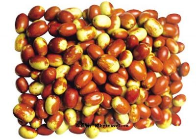

又名赞皇大枣。产于河北赞皇。长圆形，果顶稍凹入皮，呈褐色，外形美观，白亮紫红，肉厚皮薄，油大味甘，晒干掰开，尺余长的蜜丝维连不断。鲜枣甜脆可口，干枣肉绵甘香，含糖量达62%-70%，每百克鲜枣含维生素300-600毫克，比同等重量的梨多140倍，比苹果多69倍。特定品质果实性状：果实长圆形或倒卵形。平均果重17.3克，最大果重29克，大小整齐。梗洼小，中等深。环洼窄小，较深。果面广圆，顶端稍凹陷。果面平整。果皮深红褐色，光泽较差，韧性好，不裂果。果肉近白色，致密质细，汁液中等，味甜略酸，含可溶性固形物30.5％，可食率96.0％，制干率47.8％。鲜食风味中上，干制红枣果形饱满，有弹性，耐贮运，品质上等。果核纺锤形，核内不具种子。在产地，9月下旬成熟采收，果实生育期100天左右。 赞皇大枣是河北省的名土特产品之一。其特点是：色鲜、皮薄、个大、核小、味甜、看外形，体硕如卵，紫红发亮，酷似一件精美的艺术珍玩；剥开后，则见肉持肥厚，质地细密、莹如冰雪；吃一口，味道甘甜，鲜美如酪；晒干掰开，尺把长的密丝纤连不断。故被人们誉为“金丝蜜”。 
白洋淀松花蛋又叫“河北皮蛋”。主要产在河北省安新县境内的白洋淀一带。白洋淀松花蛋已有100多年的生产历史。在清朝时期当地就开设了很多作坊，加工松花蛋，畅销于北京，天津，保定等地。白洋淀有辽阔的水域，当地居民利用丰富的水资源优势，历代养鸭，这里的淀鸭群游，生活于浅淀内，以觅食鱼、虾、水虫、螺、蚌和水藻等新鲜食物，鸭蛋产量多、个头大。白洋淀松花蛋，就是以本地产的鳟鸭蛋采用先进的工艺和科学配方加工而成。若剥去蛋壳，清晰可见蛋体晶莹，呈茶褐色半透明，形似琥珀，富有弹性，表面有松枝花纹；切开蛋体，蛋黄为深绿色或五彩色，软而不流，浓而不滴，清香扑鼻，味美适口，食而不腻，易于消化，最适佐酒，也是宴席中的美味佳品。白洋淀优质松花蛋，销往日本，新加坡，菲律宾，孟加拉，泰国，马来西亚等国家和香港，澳门地区。( 保定) 白洋淀位于冀中平原，是水域辽阔、风景秀丽、物产丰富的自然水区。这里除盛产鱼、虾、蟹、莲、藕、苇、菱角等水产、土产外，还盛产一种驰名中外的风味食品——皮蛋。
俗话说“天上龙肉，地下驴肉”，驴肉肉质红嫩、口感劲道，比牛肉的纤维要细，口感更好，没有猪肉的肥腻，也没有羊肉的膻味，所以说驴肉是走兽肉的上品的确不为过。 河间市地处广阔的华北平原中部。古代曾为河间国，汉代封河间王，是为诸侯，后又设府，地处京南交通要道，明代以后，为通往南方各地的“御路”，相传道路的宽度为“十八弓”。成为南北通衢大路，俗称京南第一府。因此，南北风味的各种饮食文化均在这里有所发展，尤其是清末时期，宫内太监，多出于河间一带，清朝没落，宫中烹饪高手御膳房太监回到家乡，流于民间，靠手艺吃饭。因此有话流传说：“要吃饭，河间转” ，“天上龙肉，地上驴肉” 自从最后两只龙在夏朝被人吃了一条、死了一条以后，就只有屠龙术流传下来了，而驴则在千百年间，繁衍生息，让人吃也吃不完。堪称第一人间至味。驴肉的美味，古人早已受用。宋朝学士宋祁路过洛阳，在友人处盘桓数日，诗酒唱和之余，大食驴肉，最后竟吃红了眼，竟将代步的驴也杀来食之。 据有河间独特风味的“大火烧夹驴肉”。具有悠久的历史，最早的传说是：唐玄宗李隆基登基前来到河间，一书生“杀驴煮秫”招待李隆基，他吃后连说：好吃好吃；清代乾隆下江南，从河间路过，错过住处在民间吃饭，主人只好把剩饼拿来夹上驴肉放在大锅里煲热，乾隆吃后连连称赞美味可口。经过数代流传才形成这样一种形状（还有一种是圆形的）和风味。河间有句俗语叫：“常赶集还怕看不见卖大火烧的”，这也就是说大火烧在老百姓心目中的地位，和大家对这种食品的喜爱。

小吃一种，发源于河北省古城保定，广泛流传于冀中平原，其中以保定北部徐水县的漕河地区历史最为悠久。俗话说天上龙肉，地上驴肉，发源于河北省古城保定，广泛流传于冀中平原，其中以保定北部徐水县的漕河地区历史最为悠久。作为河北省餐饮文化中心的保定，是中国第九大菜系——冀菜系的发源地，而处于这一河北餐饮中心的驴肉火烧经过勤劳的保定人民多少代人不断地发展和推广，已经称为了名副其实的除了“铁球、面酱、春不老”之外的保定第四宝。走在保定的街头很有特色的一道景观便是随处可见的驴肉火烧小吃摊，可以说，驴肉火烧这一名吃已经融入了保定普通人民的生活中，成为保定悠久的饮食文化的一个重要的组成部分。 火烧为一种面食，一般为死面做成（注：死面为未经发酵的面粉，经过发酵的面粉叫做活面，用活面做成的类似东东称为“烧饼”），将其在饼铛里烙熟后，架在灶头里烘烤，使其外焦里嫩，别具风味；趁热用刀劈开，加入热腾腾的熟驴肉，是最正宗的吃法。另有肉汤加淀粉熬制的焖子夹入火烧佐食，其中以保定南部定州地区的焖子最为美味和著名。有些厨师会加入驴板肠提味，吃起来也别有一番风味。 驴肉是一种典型的低脂肪、高蛋白的食品，其100克所含蛋白质高达18.6克，远远高于猪、牛、羊肉的蛋白质含量，而脂肪含量仅为0.7克，且钙、磷、铁含量也相对较高，俗话说“天上龙肉，地下驴肉”，可见驴肉的地位。“驴肉火烧”所用驴肉的选择极为严格，而其中更以驴脸部的肉最为细嫩和讲究，经过精细的加工而成的驴肉，配以刚刚出炉的、脆软的火烧，再配上保定三百年老字号的“槐茂”酱菜和小米粥，吃起来回味无穷。
迁西县为“京东板栗”主要产区之一。迁西板栗的主产区包括：汉儿庄、青山关、喜峰口、杨家峪等，产量占迁西总产量的60%，分布在长城以南15公里内。 京东板栗以色泽鲜艳、含糖量高、甘甜芳香和营养丰富闻名，在国内外市场久负盛名。它主要分布在北京以东广大的燕山山区，以迁西、遵化、昌黎、兴隆最多。 栗树是我国培育最早的果树之一，与桃、杏、李、枣并称“五果”。 早在19世纪，京东板栗就远销日本。现在，日本国内有近万个京东板栗销售店铺。 京东板栗有很高的营养价值。据测定，京东板栗的种仁中含有蛋白质、脂肪、淀粉、糖，并含有多种维生素。明代医学家李时珍在他的医学名著《本草纲目》中说，吃食栗子可以益气血、养胃、补肾、健肝脾；生食还有治疗腰腿酸疼、舒筋活络的功效。栗果的食法很多，除生食外，也可以煮食，还可以加工成栗子鸡罐头、栗子羹、巧克力、代乳粉、栗子蜜饯等风味食品，以及各种糕点的馅料。在我省，最常见的吃法是糖炒栗子。糖炒栗子气味芬芳，香甜可口。它含有大量的可溶性糖，易被人体吸收，是老幼皆宜的传统果品。在清代，北京一带把糖炒栗子叫做“灌香糖”。
满城磨盘柿个大味甜，平均单果重250克，最大单果重610克。柿果色泽美丽、营养丰富、味甜多汁。果实可供鲜食、酿酒、做醋，还可制成柿干、柿汁等。柿果具有补脾、健胃、润肠、降血压、润便、止血、解酒毒等功效。柿蒂可治呃逆、夜尿；柿霜可治喉痛、口疮咽干等；柿叶茶可防治动脉硬化，治疗失眠。满城县是磨盘柿集中产区，栽培历史悠久，明朝万历年间就有记载。磨盘柿具有抗干旱、抗湿涝、耐脊薄、适应性强、容易管理、结果早、产量高、经济寿命长、高效益等特点，被群众称为“铁杆庄稼”。现存百年以上树龄的柿树3万余株，生长结果良好。 满城县加大科技投入，大力推广无公害标准化生产。满城磨盘1992年获河北省优质果品奖，1994年获全国林业名特优新产品博览会银奖，1999－2003年连续5年被认定为北方农副产品暨农业技术交易会名优农产品，2004年被省评为“果王”，2001年被国家林业局命名为“中国磨盘柿之乡”。2000年承接国家林业局磨盘柿示范基地建设任务，在神星镇魏庄村建立国家级高标准磨盘柿示范基地3000亩。